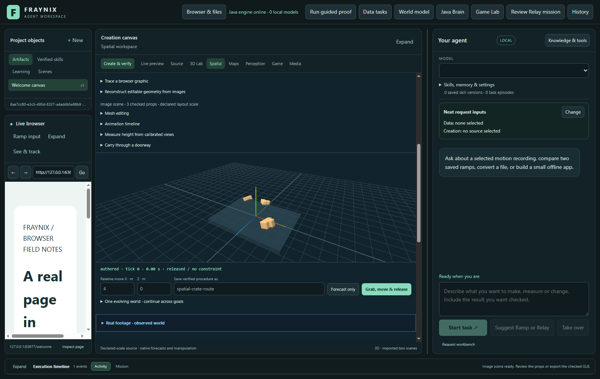
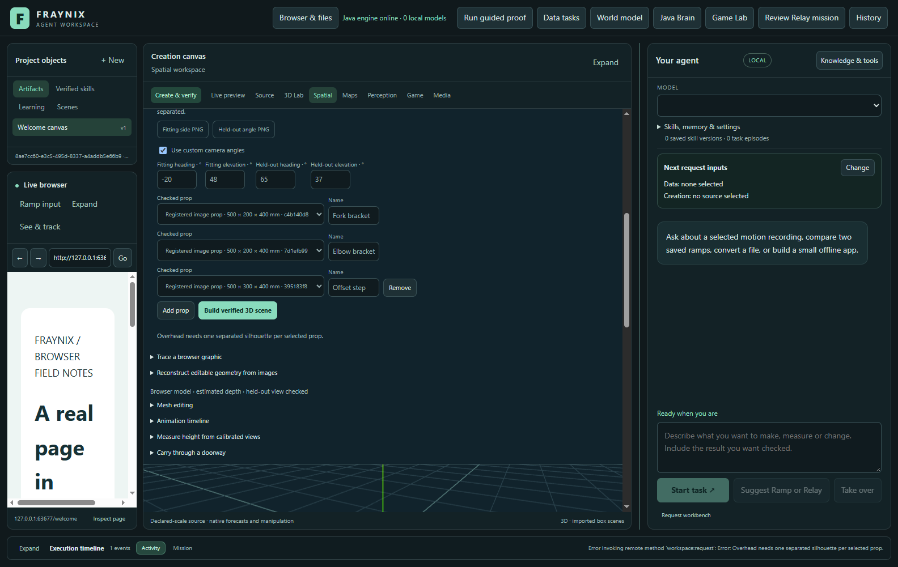
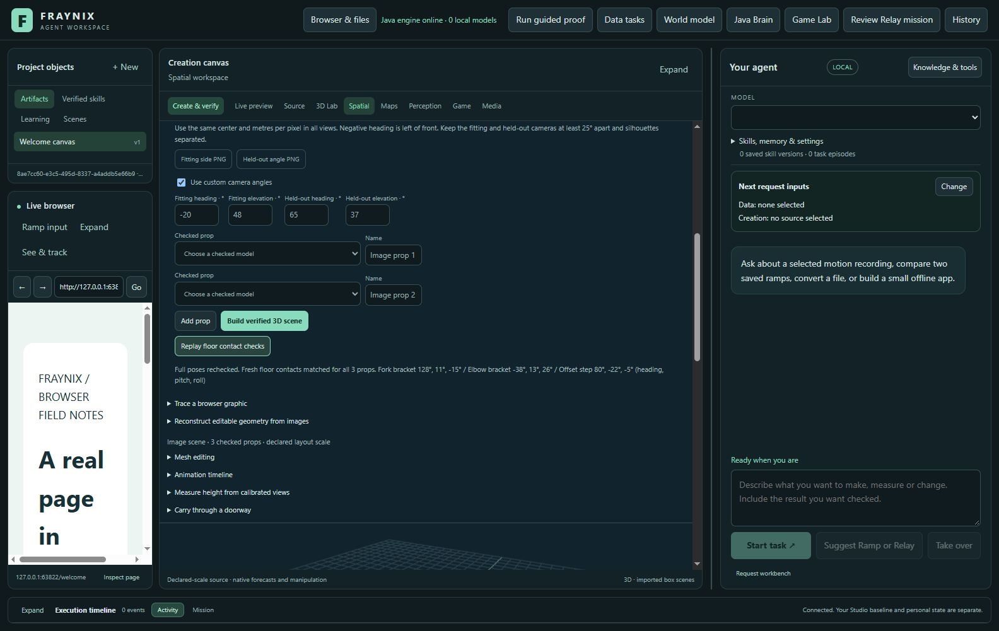

Verify three prop poses with custom camera angles
Two fitting images recover three props at custom orthographic camera angles. A separate view checks each fixed pose.

Three editable Blender-derived props at their recovered poses

Spatial refuses an overhead image with two merged silhouettes

Custom camera settings and all three native checks restored after restart
System files
Open source